The save button on the manifest paper - 3 ways (real terminal, Indonesian)
Each one is the real button with new CSS, on the real paper, reached by the real steps. No big amber fill.
The amber fill. On PC the longer word wraps to 2 lines, the button grows from 68 to 100 px, and the bolt is pushed to the edge.
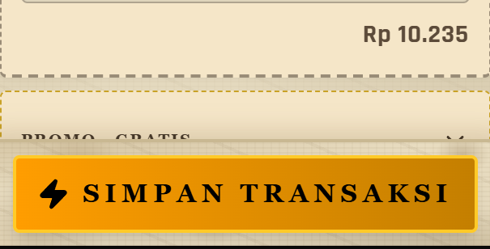
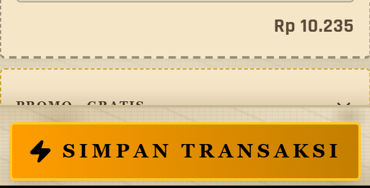
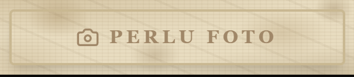
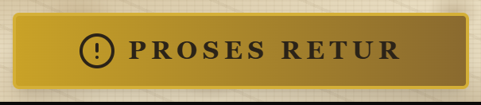
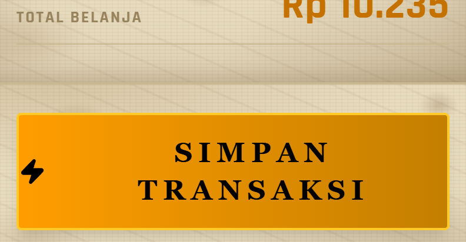
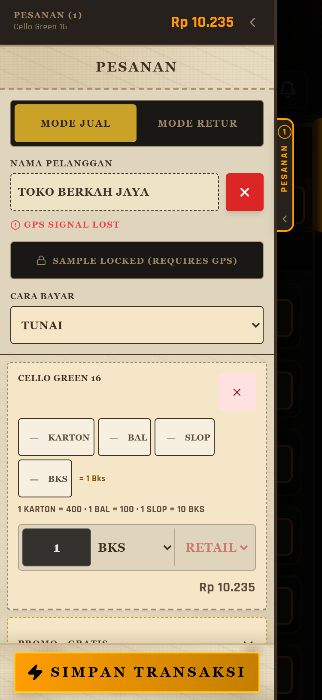
A solid block of black ink, the same black as the photo corners, with a thin line inside. Only the bolt is amber. It matches the dark MODE switch at the top of this paper.
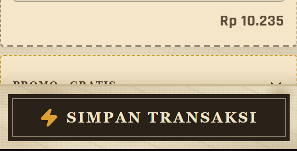
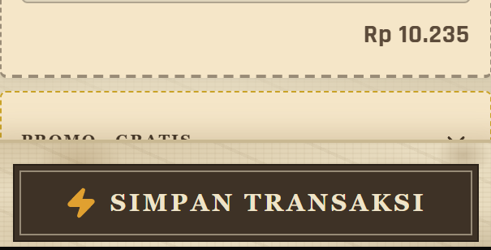
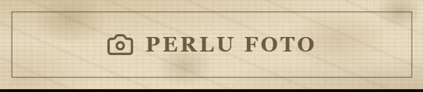
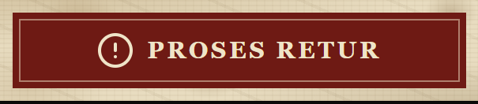
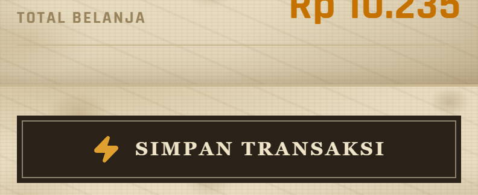
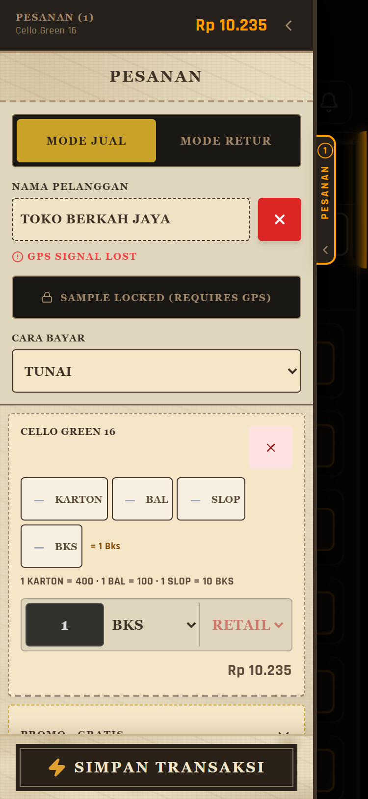
No fill, a double ink line like a stamped form box. It looks the most like the paper, and it is the easiest of the three to overlook.
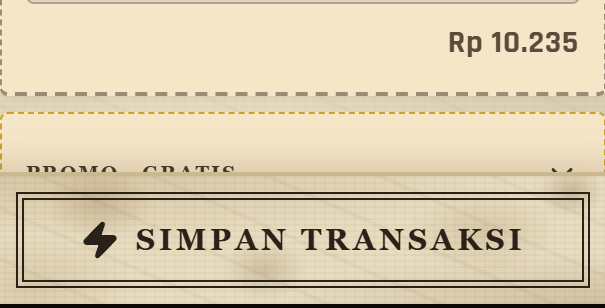
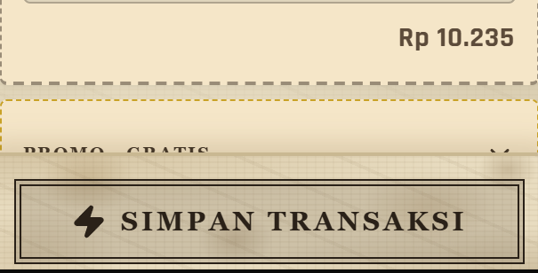

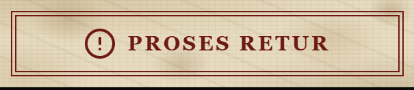


A plain ink frame with a small amber wax seal holding the bolt. Keeps a bright amber spark, as a small mark, not a big fill.
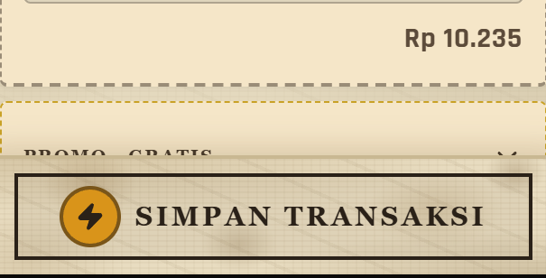
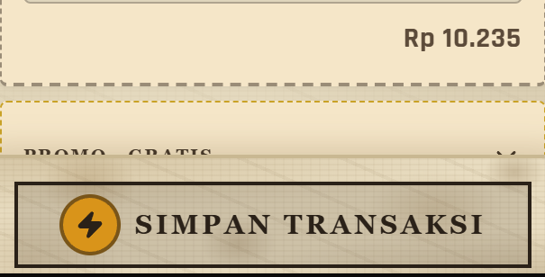

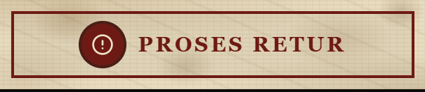
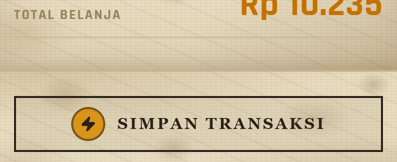
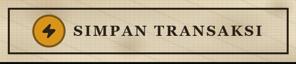
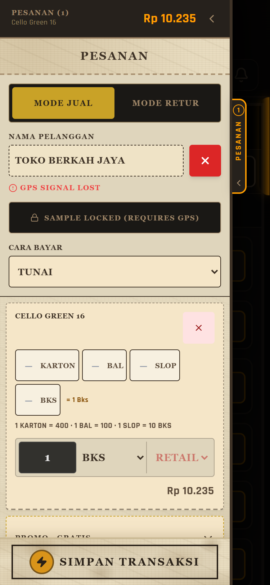